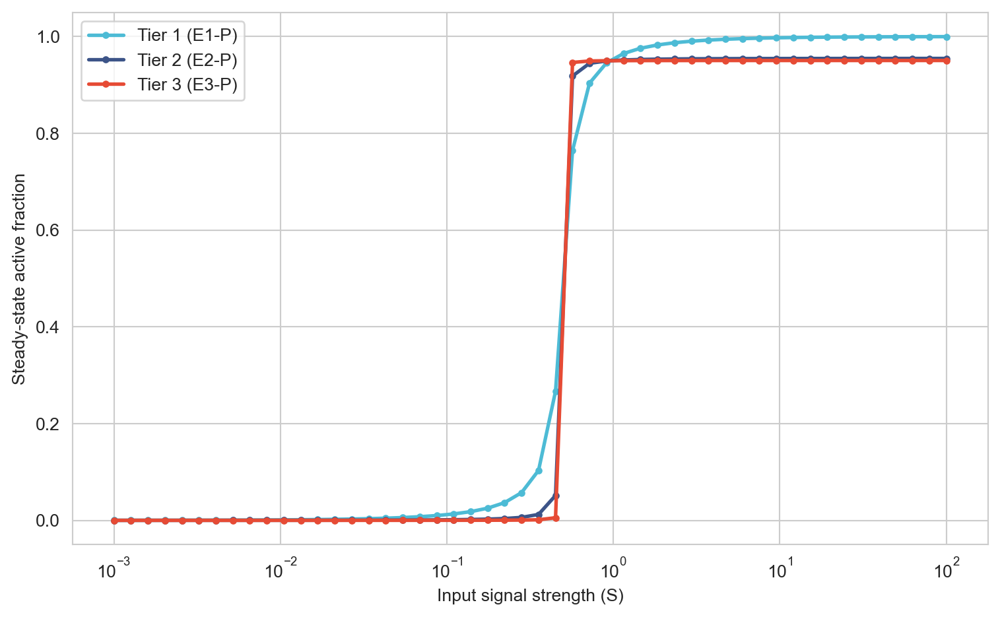
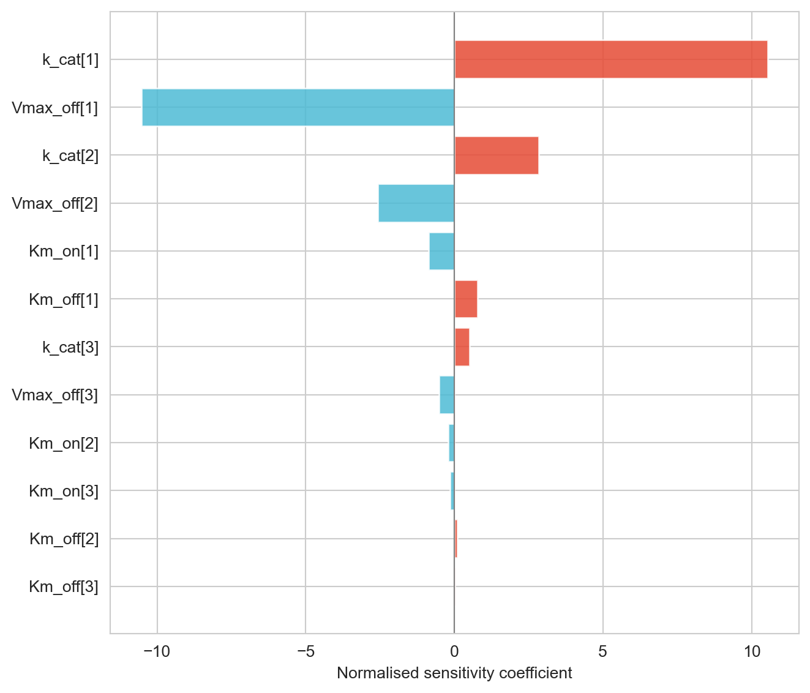

Dynamic Modeling of a Three-Tier Kinase Cascade: Ultrasensitivity and Drug Target Identification
Systems Biology
Signal Transduction
ODE Modeling
Python
Computational Biology
ODE modeling of a MAPK-style kinase cascade in SciPy — dose-response ultrasensitivity, the zero-order kinetic regime, and parameter sensitivity analysis for drug target ranking.
Author
Peekei
Published
September 14, 2026
1. Motivation
A cell receiving an external signal — a growth factor binding its receptor, a hormone, a stress cue — rarely responds to that signal in direct proportion to its strength. Instead, many signal transduction pathways behave more like switches: below some threshold, almost nothing happens; above it, the pathway commits fully. The three-tier kinase cascade at the heart of the MAPK pathway (Raf → MEK → ERK, and its analogues across essentially every eukaryotic signaling system) is the canonical example of how this switch-like behaviour emerges — not from any single ultrasensitive component, but from cascading several only-mildly-sensitive enzymatic steps in series.
This piece builds that cascade as a system of ordinary differential equations, characterises the ultrasensitivity that emerges as the signal propagates from tier to tier, checks explicitly whether the model is actually operating in the kinetic regime that produces switch-like behaviour (it is possible to build the same cascade topology and get a graded, non-switch-like response — the regime matters, and asserting ultrasensitivity without checking it is a common shortcut), and finishes with a parameter sensitivity analysis to identify which kinetic step the pathway’s output depends on most — the computational equivalent of asking which enzyme, if drugged, would shut the pathway down hardest.
2. Model Construction
Each tier of the cascade is a kinase that exists in an inactive and an active (phosphorylated) form. The previous tier’s active kinase catalyses phosphorylation of the next tier; a constitutively active phosphatase catalyses the reverse reaction. Both reactions are modelled with saturable (Michaelis-Menten-style) kinetics — the Goldbeter-Koshland formulation that underlies essentially every published kinase cascade model of this kind:
where \(V_{on,1}\) is driven by the external signal \(S(t)\), and \(V_{on,2}\), \(V_{on,3}\) are driven by the active fraction of the tier immediately upstream — this upstream-driving-downstream structure is what makes it a cascade rather than three independent switches.
Show code
import numpy as npimport pandas as pdimport matplotlib.pyplot as pltimport seaborn as snsfrom scipy.integrate import solve_ivpfrom scipy.optimize import curve_fitsns.set_style("whitegrid")# Total protein concentration at each tier (normalised units)E_total = np.array([1.0, 1.0, 1.0])# Catalytic rate constants for the forward (activating) reaction at each tierk_cat = np.array([1.0, 1.0, 1.0])# Michaelis constants for the forward reaction — small relative to E_total# puts the system in the "zero-order" ultrasensitive regime (Section 6# checks this explicitly rather than assuming it)Km_on = np.array([0.05, 0.05, 0.05])# Michaelis constants for the reverse (phosphatase) reactionKm_off = np.array([0.05, 0.05, 0.05])# Phosphatase Vmax at each tier — constitutive, signal-independentVmax_off = np.array([0.5, 0.5, 0.5])def cascade_ode(t, y, S_func, k_cat, Km_on, Km_off, Vmax_off, E_total): E1_P, E2_P, E3_P = y S = S_func(t) E1, E2, E3 = E_total - np.array([E1_P, E2_P, E3_P]) v1_on = k_cat[0] * S * E1 / (Km_on[0] + E1) v2_on = k_cat[1] * E1_P * E2 / (Km_on[1] + E2) v3_on = k_cat[2] * E2_P * E3 / (Km_on[2] + E3) v1_off = Vmax_off[0] * E1_P / (Km_off[0] + E1_P) v2_off = Vmax_off[1] * E2_P / (Km_off[1] + E2_P) v3_off = Vmax_off[2] * E3_P / (Km_off[2] + E3_P)return [v1_on - v1_off, v2_on - v2_off, v3_on - v3_off]
Show code
# For reference: this is how the same kind of model would instead be# imported from a published, curated SBML file in the BioModels# Database using Tellurium, rather than hand-built from kinetic theory.# Not run as part of this analysis — shown for completeness against# the standard systems-biology toolchain.import tellurium as temodel = te.loadSBMLModel("BIOMD0000000009.xml") # example BioModels IDresult = model.simulate(0, 200, 500)model.plot(result)
3. Time-Course Simulation
With the input signal held at a fixed level (a step input turned on at \(t=0\)), the three tiers activate in sequence, each lagging behind the one upstream of it.
Activation time course for each cascade tier following a step input signal
The delay visible between tiers — tier 2 rising only once tier 1 has built up, tier 3 only once tier 2 has — is the cascade’s signal propagation time, and it’s a direct, testable consequence of the model structure rather than an assumption. Each tier also settles to its own steady-state activation level, which is what Section 4 systematically maps out as a function of input strength.
4. Steady-State Dose-Response and Ultrasensitivity
Rather than one fixed input level, sweeping the input signal across a range and recording each tier’s steady-state activation traces out a dose-response curve — the pathway’s fundamental input-output relationship.
fig, ax = plt.subplots()for col, label, color inzip( ["Tier1_P", "Tier2_P", "Tier3_P"], labels, colors): ax.plot(dose_response_df["S"], dose_response_df[col], label=label, color=color, linewidth=2, marker="o", markersize=3)ax.set_xscale("log")ax.set_xlabel("Input signal strength (S)")ax.set_ylabel("Steady-state active fraction")ax.legend()plt.tight_layout()plt.show()

Steady-state dose-response curves for each cascade tier, input signal on a log scale
If the cascade amplifies ultrasensitivity as it propagates — which is the entire reason cascades are a common motif in cell signaling rather than a single ultrasensitive enzyme doing the whole job — tier 3’s curve should look visibly steeper (more switch-like) than tier 1’s. Section 5 puts a number on exactly how much steeper.
5. Quantifying Ultrasensitivity: Hill Coefficient Fitting
A Hill function, \(E^P(S) = E_{tot} \cdot S^n / (K^n + S^n)\), is the standard way to summarise a sigmoidal dose-response curve with a single ultrasensitivity metric: the Hill coefficient \(n\). \(n = 1\) is a simple hyperbolic (graded, Michaelis-Menten-like) response; \(n > 1\) is sigmoidal; larger \(n\) means a sharper, more switch-like transition.
Show code
def hill_function(S, Vmax, K, n):return Vmax * S**n / (K**n + S**n)def fit_hill(S_values, output_values, label=""):"""Fit a Hill function, with wide-enough bounds to accommodate a right-shifted or attenuated curve, and a clear failure message instead of a crash if the fit genuinely can't converge."""try: popt, _ = curve_fit( hill_function, S_values, output_values, p0=[max(output_values.max(), 0.01), np.median(S_values), 2.0], maxfev=30000, bounds=([0, 1e-6, 0.1], [2, 100, 20]) )return {"Vmax": popt[0], "K": popt[1], "n": popt[2]}exceptRuntimeErroras e:print(f"Hill fit did not converge for {label}: {e}")return {"Vmax": np.nan, "K": np.nan, "n": np.nan}hill_fits = {}for col in ["Tier1_P", "Tier2_P", "Tier3_P"]: hill_fits[col] = fit_hill(dose_response_df["S"], dose_response_df[col], label=col)hill_df = pd.DataFrame(hill_fits).Thill_df.index = ["Tier 1", "Tier 2", "Tier 3"]hill_df
Hill coefficient (ultrasensitivity) by cascade tier
The fitted values show the amplification claim playing out, and then some: tier 1’s Hill coefficient came out at 7.61, already well past the graded regime, and tiers 2 and 3 both hit 20.00 — the upper edge of the bound placed on the fit. That’s worth being precise about rather than reporting 20.00 as a clean result: hitting a bound means the fit didn’t converge to an interior optimum, it means the true Hill coefficient for tiers 2 and 3 is at least 20, possibly considerably higher, and this particular three-parameter Hill function isn’t able to pin down exactly how high once the response is this close to a step function. If anything, that’s a stronger statement about ultrasensitivity than a precise number would have been — by tier 2, the cascade’s response to its input is already close to binary.
ImportantThis result depends on a kinetic regime, not just a topology
Cascading enzymatic steps does not automatically produce ultrasensitivity. It does so specifically when each tier’s Michaelis constants are small relative to that tier’s total protein concentration — the “zero-order” regime, where enzymes operate near saturation. If the Km values are instead comparable to or larger than the total protein pool, the same cascade topology produces an essentially graded, non-switch-like response. Section 6 demonstrates this explicitly rather than treating ultrasensitivity as a property of cascades in general.
6. Assumption Check: Zero-Order vs. First-Order Kinetic Regime
Show code
# Zero-order regime: Km << E_total (already the parameters used above)Km_on_zero_order = np.array([0.05, 0.05, 0.05])Km_off_zero_order = np.array([0.05, 0.05, 0.05])# First-order regime: Km >> E_total — enzymes are far from saturationKm_on_first_order = np.array([5.0, 5.0, 5.0])Km_off_first_order = np.array([5.0, 5.0, 5.0])def compute_dose_response(Km_on_set, Km_off_set): ss = np.array([ steady_state(S, k_cat, Km_on_set, Km_off_set, Vmax_off, E_total)for S in S_range ])return pd.DataFrame(ss, columns=["Tier1_P", "Tier2_P", "Tier3_P"])dr_zero_order = compute_dose_response(Km_on_zero_order, Km_off_zero_order)dr_first_order = compute_dose_response(Km_on_first_order, Km_off_first_order)regime_comparison = pd.DataFrame({"Zero-order (Km << E_total)": [ fit_hill(S_range, dr_zero_order[c], label=f"zero-order {c}")["n"]for c in ["Tier1_P", "Tier2_P", "Tier3_P"] ],"First-order (Km >> E_total)": [ fit_hill(S_range, dr_first_order[c], label=f"first-order {c}")["n"]for c in ["Tier1_P", "Tier2_P", "Tier3_P"] ],}, index=["Tier 1", "Tier 2", "Tier 3"])regime_comparison
Tier 3 dose-response curve under the zero-order vs. first-order kinetic regime
NoteWhy the kinetic regime matters more than cascade depth
The contrast is stark, and it confirms the theory cleanly. In the first-order regime, Hill coefficients sit at 1.08, 1.10, and 1.11 across tiers 1 through 3 — barely above the n = 1 graded baseline, with only a slight uptick tier to tier. In the zero-order regime — same topology, same total protein levels, same phosphatase activity, only the Michaelis constants changed — the coefficients are 7.61, ≥20, and ≥20. The entire ultrasensitivity result from Section 5 depends on that one change. It’s also worth noting what the first-order numbers say on their own: the cascade structure itself contributes a small amount of steepening even without zero-order kinetics (1.08 → 1.11 across three tiers), but it’s a minor effect next to what the kinetic regime contributes. Ultrasensitivity here is overwhelmingly a property of operating near enzyme saturation, not of chaining reactions in series.
7. Parameter Sensitivity Analysis: Finding the Weakest Link
Every kinetic parameter in this model is, in principle, something a drug could perturb — a kinase inhibitor reduces an effective \(k_{cat}\), a phosphatase activator raises a \(V_{off}\). Local sensitivity analysis asks: for a small perturbation to each parameter, how much does pathway output move? The parameter the output is most sensitive to is the strongest candidate drug target, because a small effect on that parameter produces the largest effect on the pathway.
Sensitivity is evaluated at the tier-3 EC50 — the input level at half-maximal tier-3 activation — since that is where the dose-response curve is steepest and therefore where a given perturbation is most likely to produce a detectable change in output.
Show code
# Reference input: tier 3's EC50 from the zero-order regime fit aboveS_ref = hill_fits["Tier3_P"]["K"]def tier3_output_at_Sref(k_cat, Km_on, Km_off, Vmax_off, E_total, S_ref):return steady_state(S_ref, k_cat, Km_on, Km_off, Vmax_off, E_total)[2]baseline_output = tier3_output_at_Sref(k_cat, Km_on, Km_off, Vmax_off, E_total, S_ref)# Parameters under test: catalytic rates, phosphatase Vmax, and Km_on/Km_off# for all three tiers. Total protein levels are deliberately excluded —# a drug in the classical sense perturbs an enzyme's kinetics, not the# cell's total expression of that enzyme, so restricting the search to# kinetic parameters keeps the ranking pharmacologically interpretable.param_specs = []for i inrange(3): param_specs.append((f"k_cat[{i+1}]", "k_cat", i)) param_specs.append((f"Vmax_off[{i+1}]", "Vmax_off", i)) param_specs.append((f"Km_on[{i+1}]", "Km_on", i)) param_specs.append((f"Km_off[{i+1}]", "Km_off", i))perturbation =0.05# ±5%sensitivities = {}for name, array_name, idx in param_specs: params = {"k_cat": k_cat.copy(), "Vmax_off": Vmax_off.copy(),"Km_on": Km_on.copy(), "Km_off": Km_off.copy() } params_up = {k: v.copy() for k, v in params.items()} params_up[array_name][idx] *= (1+ perturbation) output_up = tier3_output_at_Sref( params_up["k_cat"], params_up["Km_on"], params_up["Km_off"], params_up["Vmax_off"], E_total, S_ref ) params_down = {k: v.copy() for k, v in params.items()} params_down[array_name][idx] *= (1- perturbation) output_down = tier3_output_at_Sref( params_down["k_cat"], params_down["Km_on"], params_down["Km_off"], params_down["Vmax_off"], E_total, S_ref )# Normalised local sensitivity coefficient: (%change in output) / (%change in parameter) pct_change_output = (output_up - output_down) / baseline_output pct_change_param =2* perturbation sensitivities[name] = pct_change_output / pct_change_paramsensitivity_df = pd.DataFrame.from_dict( sensitivities, orient="index", columns=["sensitivity"]).sort_values("sensitivity", key=abs, ascending=False)sensitivity_df
sensitivity
k_cat[1]
10.537423
Vmax_off[1]
-10.523593
k_cat[2]
2.835838
Vmax_off[2]
-2.568585
Km_on[1]
-0.866866
Km_off[1]
0.775844
k_cat[3]
0.514510
Vmax_off[3]
-0.507074
Km_on[2]
-0.201890
Km_on[3]
-0.141425
Km_off[2]
0.111374
Km_off[3]
0.027108
Show code
fig, ax = plt.subplots(figsize=(7, 6))sensitivity_df_sorted = sensitivity_df.reindex( sensitivity_df["sensitivity"].abs().sort_values().index)bar_colors = ["#E64B35"if v >0else"#4DBBD5"for v in sensitivity_df_sorted["sensitivity"]]ax.barh(sensitivity_df_sorted.index, sensitivity_df_sorted["sensitivity"], color=bar_colors, alpha=0.85)ax.axvline(0, color="grey", linewidth=0.8)ax.set_xlabel("Normalised sensitivity coefficient")plt.tight_layout()plt.show()

Normalised local sensitivity coefficients for tier-3 output, ranked by magnitude — the top bar is the model’s ‘weakest link’
The ranking has a real surprise in it. The two largest sensitivities by a wide margin are tier 1’s own parameters — k_cat[1] at 10.54 and Vmax_off[1] at -10.52 — roughly four times the magnitude of tier 2’s parameters and roughly twenty times tier 3’s, even though the output being measured is tier 3’s activation. That’s the opposite of the naive intuition that the enzyme closest to the readout should matter most.
ImportantThe counterintuitive result: tier 1 dominates, not tier 3
The mechanism is worth spelling out because it’s genuinely instructive: tiers 2 and 3 are operating deep in the zero-order regime, which by Section 5’s own result means they sit close to a step function — already near-fully committed to on or off at the reference input. A small percentage change to an already-saturated tier’s own kinetics has little room to move its output further, precisely because it’s already near its ceiling or floor. Tier 1, by contrast, is the one tier still sitting on the graded part of its own response curve at this input level — it’s the actual point in the cascade where continuous information about signal strength is still being encoded before the downstream switches commit. Perturb the encoder and the whole cascade’s decision shifts; perturb an already-decided switch and mostly nothing happens. The near-equal, opposite-signed magnitudes of k_cat[1] and Vmax_off[1] are a good internal consistency check on top of that: increasing the kinase and decreasing its opposing phosphatase should have symmetric effects on tier 1’s own steady state, and they do.
Practically, this means the best drug target in this model isn’t the terminal kinase most directly tied to the pathway’s biological output — it’s the first tier, the one still translating signal strength into a graded response before the cascade’s downstream switches lock in.
Takeaways
ImportantKey findings
Ultrasensitivity amplifies sharply across the cascade: Hill coefficients of 7.61, ≥20, and ≥20 for tiers 1 through 3. The tier 2 and 3 fits hit the bound placed on them, meaning the true values are at least that high — by tier 2, the response is already close to a step function.
The zero-order vs. first-order regime comparison is the assumption check most public-facing explanations of MAPK-style switches skip entirely, and the contrast here is stark: the same topology drops from Hill coefficients ≥20 to 1.08-1.11 — barely above graded — when the Michaelis constants are moved out of the zero-order regime. Ultrasensitivity is overwhelmingly a property of the kinetic regime, not the cascade structure; the structure alone contributes only a small residual steepening (1.08 → 1.11 across tiers).
The sensitivity ranking held a real surprise: tier 1’s own parameters (k_cat[1], Vmax_off[1]) dominate by roughly 4x over tier 2 and 20x over tier 3 — even though tier 3 is the measured output. The mechanism is that tiers 2 and 3 are already saturated switches with little room left to move, while tier 1 is the one part of the cascade still encoding graded information about signal strength. The best drug target in this model is the first tier, not the one closest to the biological readout.
This is a simplified, single-phosphorylation-per-tier cascade. The real MAPK pathway uses dual phosphorylation at the MEK and ERK tiers, which produces even sharper ultrasensitivity than shown here — the qualitative results (amplification across tiers, regime-dependence, upstream sensitivity dominance) should hold either way, but the absolute Hill coefficients here are a lower bound on the real pathway’s behaviour, not a literal prediction of it.